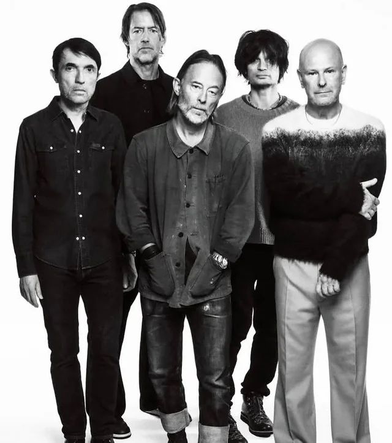

Radiohead é uma banda britânica de rock alternativo, formada no ano de 1985 em Abingdon, Oxford por Thom Yorke, Jonny Greenwood, Colin Greenwood, Ed O'Brien e Philip Selway. Desde 1994 a banda têm trabalhado com o produtor Nigel Godrich e Stanley Donwood na produção das capas dos álbuns. A abordagem experimental do Radiohead é creditada com o avanço do som do rock alternativo no final dos anos 1980. Além disso, Radiohead foi introduzido ao Hall da Fama do Rock and Roll em 2019.
Surgido como "On a Friday" na década de 1980, o Radiohead lançou seu primeiro álbum em 1993, estourando com "Creep". A banda evoluiu do rock alternativo de The Bends para a obra-prima OK Computer. Em 2000, revolucionaram com a música eletrônica de Kid A. Desde então, consolidaram-se como pioneiros da música experimental e continuam na ativa, com sua última turnê sendo a realizada em 2025 realizada em vários países na Europa.
